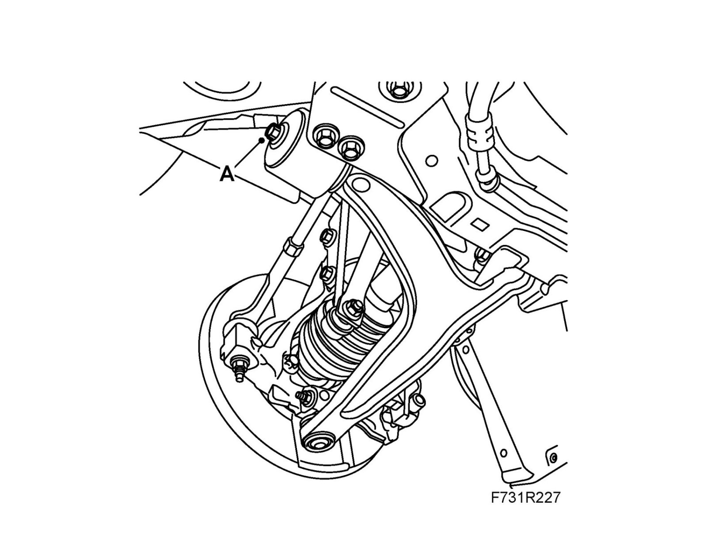

Trailing Arm Bushing: Adjustments
Suspension arm bush, rear, adjustmentAdjustment
Important
Use a track lift for the car in order to avoid damaging the bushing.
1. Remove the suspension arm bush screw (A) and replace it with a new one. Use Thread locking adhesive, Loctite 242.
Tightening torque 40 Nm +30° (30 lbf ft +30°)
